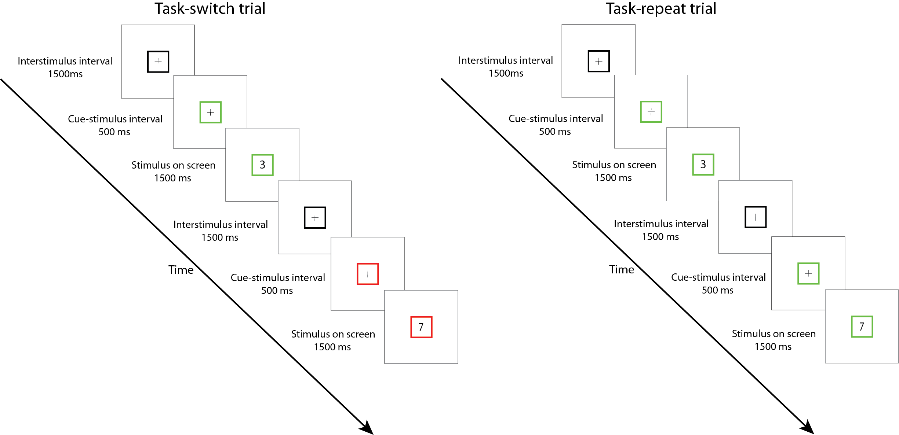

Wrangling behavorial data generated by OpenSesame
Contents
Wrangling behavorial data generated by OpenSesame¶
Introduction¶
You build the experiment and ran your first two participants. Now, it is time to take a look at the data you have collected. We will be working with a dataset of a task-switching study. In this study, the participants had to conduct two tasks separately: they either had to specify with the left or right button whether the number on screen was odd or even (parity task) or they had to specify with the left or right button whether the number was smaller or larger than 5 (magnitude task). The catch is that they were only told which task they had to do 500 milliseconds before the number came on screen on which they had to respond. If they had to repeat the task from the previous trial, we call that a repeat trial. If they had to switch to another task relative to the previous trial, we call that a switch trial. See below for a schematic overview of the experiment:

Each participant goes through two sessions. In one session, they have to switch tasks 75% of the time (high-switch condition). In the other session, they have to switch tasks 25% of the time (low-switch condition). This setup allows us to examine what happens when people have to switch tasks: are they faster or slower? And what happens with their response time when they have to switch tasks a lot? Or very little? Let’s find out.
OpenSesame outputs a comma-separated values (csv) file. This is a very widely used format, and you can painlessly import this file type in Python using the datafile package pandas (as we’ve seen in the exercises and lessons). Let’s import a datafile from two participants and merge those in one file:
import pandas as pd
import numpy as np
# disable chained assignments, you can ignore this line of code
pd.options.mode.chained_assignment = None
# load the subject data
subj1 = pd.read_csv("https://raw.githubusercontent.com/JeshuaT/Experimentation1/main/content/10_dataframes/data/subject-3.csv", sep=",")
subj2 = pd.read_csv("https://raw.githubusercontent.com/JeshuaT/Experimentation1/main/content/10_dataframes/data/subject-4.csv", sep=",")
# merge the subject data in one dataframe
df = pd.concat([subj1, subj2], ignore_index=True)
| EEG | ET | acc | accuracy | average_response_time | avg_rt | background | baseline_measurement | bidi | block | ... | time_wrong_response_feedback | title | total_correct | total_response_time | total_responses | trialnr | uniform_coordinates | width | correct_summary_feedback_repeat_parity | correct_summary_feedback_repeat_paritymagnitude | |
|---|---|---|---|---|---|---|---|---|---|---|---|---|---|---|---|---|---|---|---|---|---|
| 0 | 1 | 1 | 0.000000 | 0.000000 | 1482.973800 | 1482.973800 | #ABACB0 | 1 | yes | 1 | ... | 3.556749e+06 | Parity-magnitude task with teufel colors | 0 | 1482.9738 | 1 | 1 | yes | 1680 | NaN | NaN |
| 1 | 1 | 1 | 50.000000 | 50.000000 | 1094.839750 | 1094.839750 | #ABACB0 | 1 | yes | 1 | ... | 3.556749e+06 | Parity-magnitude task with teufel colors | 1 | 2189.6795 | 2 | 2 | yes | 1680 | NaN | NaN |
| 2 | 1 | 1 | 66.666667 | 66.666667 | 1015.096667 | 1015.096667 | #ABACB0 | 1 | yes | 1 | ... | 3.556749e+06 | Parity-magnitude task with teufel colors | 2 | 3045.2900 | 3 | 3 | yes | 1680 | NaN | NaN |
| 3 | 1 | 1 | 75.000000 | 75.000000 | 978.296175 | 978.296175 | #ABACB0 | 1 | yes | 1 | ... | 3.556749e+06 | Parity-magnitude task with teufel colors | 3 | 3913.1847 | 4 | 4 | yes | 1680 | NaN | NaN |
| 4 | 1 | 1 | 80.000000 | 80.000000 | 998.425180 | 998.425180 | #ABACB0 | 1 | yes | 1 | ... | 3.556749e+06 | Parity-magnitude task with teufel colors | 4 | 4992.1259 | 5 | 5 | yes | 1680 | NaN | NaN |
| ... | ... | ... | ... | ... | ... | ... | ... | ... | ... | ... | ... | ... | ... | ... | ... | ... | ... | ... | ... | ... | ... |
| 947 | 1 | 1 | 79.358717 | 79.358717 | 1032.506916 | 1032.506916 | #ABACB0 | 1 | yes | 12 | ... | 3.080682e+06 | Parity-magnitude task with teufel colors | 396 | 515220.9512 | 499 | 61 | yes | 1680 | 0.0 | 0.0 |
| 948 | 1 | 1 | 79.400000 | 79.400000 | 1031.607870 | 1031.607870 | #ABACB0 | 1 | yes | 12 | ... | 3.080682e+06 | Parity-magnitude task with teufel colors | 397 | 515803.9349 | 500 | 62 | yes | 1680 | 0.0 | 0.0 |
| 949 | 1 | 1 | 79.441118 | 79.441118 | 1031.008570 | 1031.008570 | #ABACB0 | 1 | yes | 12 | ... | 3.080682e+06 | Parity-magnitude task with teufel colors | 398 | 516535.2935 | 501 | 63 | yes | 1680 | 0.0 | 0.0 |
| 950 | 1 | 1 | 79.482072 | 79.482072 | 1029.826639 | 1029.826639 | #ABACB0 | 1 | yes | 12 | ... | 3.080682e+06 | Parity-magnitude task with teufel colors | 399 | 516972.9729 | 502 | 64 | yes | 1680 | 0.0 | 0.0 |
| 951 | 1 | 1 | 79.324056 | 79.324056 | 1029.780260 | 1029.780260 | #ABACB0 | 1 | yes | 12 | ... | 3.080682e+06 | Parity-magnitude task with teufel colors | 399 | 517979.4709 | 503 | 65 | yes | 1680 | 0.0 | 0.0 |
952 rows × 349 columns
That’s a lot of columns. In your “logger” file in OpenSesame, the recommended thing to do is to check the box of “Log all variables”. This is the safest option, because it’s easy to remove columns and you would rather not have that you missed an essential variable after doing your experiment. Let’s pick the columns that we need:
# make a list of column names that we want to include
include_columns = ['subject_nr', 'block', 'session', 'congruency_transition_type', 'congruency_type',
'correct', 'response_time', 'task_transition_type', 'task_type', "response"]
# make a new df, called df_trim, that only included the columns that are in the "include_columns" list
df_trim = df[include_columns]
# show the new df
df_trim
| subject_nr | block | session | congruency_transition_type | congruency_type | correct | response_time | task_transition_type | task_type | response | |
|---|---|---|---|---|---|---|---|---|---|---|
| 0 | 3 | 1 | lowswitch | NaN | incongruent | 0 | 1482.9738 | NaN | parity | None |
| 1 | 3 | 1 | lowswitch | congruency-switch | congruent | 1 | 706.7057 | task-switch | magnitude | a |
| 2 | 3 | 1 | lowswitch | congruency-repetition | congruent | 1 | 855.6105 | task-switch | parity | a |
| 3 | 3 | 1 | lowswitch | congruency-switch | incongruent | 1 | 867.8947 | task-repetition | parity | a |
| 4 | 3 | 1 | lowswitch | congruency-repetition | incongruent | 1 | 1078.9412 | task-switch | magnitude | a |
| ... | ... | ... | ... | ... | ... | ... | ... | ... | ... | ... |
| 947 | 4 | 12 | highswitch | congruency-repetition | congruent | 1 | 699.0107 | task-repetition | magnitude | num_6 |
| 948 | 4 | 12 | highswitch | congruency-repetition | congruent | 1 | 582.9837 | task-repetition | magnitude | a |
| 949 | 4 | 12 | highswitch | congruency-repetition | congruent | 1 | 731.3586 | task-switch | parity | a |
| 950 | 4 | 12 | highswitch | congruency-repetition | congruent | 1 | 437.6794 | task-repetition | parity | num_6 |
| 951 | 4 | 12 | highswitch | congruency-repetition | congruent | 0 | 1006.4980 | task-switch | magnitude | a |
952 rows × 10 columns
Before we make any changes to the dataframe, we must first be sure that all the columns are in the right type. If we print the data types of each column, we can see that subject_nr is an integer. However, we don’t intend for the dataframe to interpret “3” and “4” as numbers, since it’s simply a categorization. Let’s change that:
print("Column types BEFORE changing: \n", df_trim.dtypes, "\n")
df_trim['subject_nr'] = df_trim['subject_nr'].astype('category')
df_trim['correct'] = df_trim['correct'].astype('category')
print("Column types AFTER changing: \n",df_trim.dtypes)
Column types BEFORE changing:
subject_nr int64
block int64
session object
congruency_transition_type object
congruency_type object
correct int64
response_time float64
task_transition_type object
task_type object
response object
dtype: object
Column types AFTER changing:
subject_nr category
block int64
session object
congruency_transition_type object
congruency_type object
correct category
response_time float64
task_transition_type object
task_type object
response object
dtype: object
Alright, it’s getting a bit more uncluttered now. The task-design is so that the last two blocks are different kind of blocks. We don’t have to go in details now, but for further analysis we will have to create a dataframe without block 11 and 12. There are many ways to conditional selection of rows, but here we opt to use the information that we need all blocks with a value smaller than 11.
# Here the last blocks should be 12, lets check by printing the last 5 rows of the block column using the tail function
print("The last block here is 12: \n", df_trim["block"].tail(5), "\n")
# Conditionally select rows based on if the value in the "block" column is lower than 11
df_trim_blocks = df_trim[df_trim['block'] < 11]
# Check to see if the last block is now 10 instead of 12
print("Here the last block should be 10: \n", df_trim_blocks["block"].tail(5))
The last block here is 12:
947 12
948 12
949 12
950 12
951 12
Name: block, dtype: int64
Here the last block should be 10:
811 10
812 10
813 10
814 10
815 10
Name: block, dtype: int64
Lastly, it’s a bit confusing that we have only two subjects, but they are called number 3 and 4, instead of 1 and 2. Let’s fix that by replacing subject 3 with subject 1, and subject 4 with subject 2. We can use the replace function of Pandas to achieve this. Then, with the pandas unique function we can verify that the subject numbers have been changed.
# Replace 3 with 1 in subject_nr column
df_trim_blocks['subject_nr'] = df_trim_blocks['subject_nr'].replace(3, 1)
# Replace 4 with 2 in subject_nr column
df_trim_blocks['subject_nr'] = df_trim_blocks['subject_nr'].replace(4, 2)
# Print out all unique values in subject_nr column, should be 1 and 2
df_trim_blocks['subject_nr'].unique()
[1, 2]
Categories (2, int64): [1, 2]
Let’s see what kind of data we are dealing with. The “session” column tells us whether the trial was in the “lowswitch” or “highswitch” condition. This means that we should see less task-switch trials in the “lowswitch” than in the “highswitch” condition. To check this, we can use the pivot table function from pandas. Let’s check:
Note: We will be using the pandas pivot table for most of tutorial. Be aware however that all of this could also be accomplished with the pandas groupby function. Take a look here for more information on the pivot table and the difference between pivot table and groupby
piv_task_transition_exp = df_trim_blocks.pivot_table(
index=['session'], # Index on session
columns='task_transition_type', # Group on 'task_transition_type'
aggfunc='size') # Function to aggregate columns on, here we specify "size"
# Print out the pivot table
piv_task_transition_exp
| task_transition_type | task-repetition | task-switch |
|---|---|---|
| session | ||
| highswitch | 82 | 248 |
| lowswitch | 245 | 85 |
Hmmm…doesn’t balance exactly but it’s close. It is always good practice to check if the trials count is what you expected. This experiment had a quite complex counterbalancing structure, since the researchers had to counterbalance:
Amount of congruent/incongruent trials
Amount of parity/magnitude trials
Amount of congruent-switch/congruent-repetition trials
All whilst keeping the task-repetition/task-switch rate to 25/75 or 75/25 (depending on the session). This all whilst keeping into account that the first trial of each block does not count as either repetition or switch trial. In complex structures like this, sometimes you cannot aim for perfect counterbalancing, but you can aim for “as good as possible” (hence the slight discrepancy in the pivot table above). Let’s see if we can use a bit more complex pivot table to get a clearer picture if all of this worked out
piv_cong = df_trim_blocks.pivot_table(
index=['subject_nr'],
columns=['congruency_type'],
aggfunc='size') # Function to aggregate columns on, here we specify "size"
piv_cong_transition = df_trim_blocks.pivot_table(
index=['subject_nr'],
columns=['congruency_transition_type'],
aggfunc='size') # Function to aggregate columns on, here we specify "size"
piv_task = df_trim_blocks.pivot_table(
index=['subject_nr'],
columns=['task_type'],
aggfunc='size') # Function to aggregate columns on, here we specify "size"
piv_task_transition = df_trim_blocks.pivot_table(
index=['subject_nr'],
columns='task_transition_type',
aggfunc='size') # Function to aggregate columns on, here we specify "size"
# Add all dataframes to a list
dfs = [piv_cong, piv_cong_transition, piv_task, piv_task_transition]
# Merge the dataframes, axis=1 defines that the new dataframes should be added as columns instead of new rows
pd.concat(dfs, axis=1)
| congruent | incongruent | congruency-repetition | congruency-switch | magnitude | parity | task-repetition | task-switch | |
|---|---|---|---|---|---|---|---|---|
| subject_nr | ||||||||
| 1 | 167 | 173 | 166 | 164 | 172 | 168 | 245 | 85 |
| 2 | 172 | 168 | 163 | 167 | 168 | 172 | 82 | 248 |
We are repeating quite a lot of code. Whenever you notice that happen, you can probably shorten the code. Let’s try it out:
# Specify the columns we want to check
columns_to_check = ['task_type', 'congruency_type',
'task_transition_type', 'congruency_transition_type']
# Make an empty list so we can populate this later
dfs = []
# Loop over columns_to_check and make a new pivot table for each column
for column in columns_to_check: # Loops over "columns_to_check"
piv = df_trim_blocks.pivot_table(
index=['subject_nr'],
columns=[column], # The for-loop inserts a new column here on every iteration
aggfunc='size') # Function to aggregate columns on, here we specify "size"
# Append the pivot table to our "dfs" list (which was empty initially)
dfs.append(piv)
# Merge the dataframes that are in the "dfs" list
pd.concat(dfs, axis=1)
| magnitude | parity | congruent | incongruent | task-repetition | task-switch | congruency-repetition | congruency-switch | |
|---|---|---|---|---|---|---|---|---|
| subject_nr | ||||||||
| 1 | 172 | 168 | 167 | 173 | 245 | 85 | 166 | 164 |
| 2 | 168 | 172 | 172 | 168 | 82 | 248 | 163 | 167 |
Nice. It’s cleaner and also way easier to change this code if you want to check another column for example. The counterbalancing looks good enough.
Now we’ll do some first checks on whether the results are what we expect. Let’s first remove all the incorrect trials, we aren’t interested in those at the moment.
df_correct = df_trim_blocks[df_trim_blocks['correct'] == 1]
df_correct
| subject_nr | block | session | congruency_transition_type | congruency_type | correct | response_time | task_transition_type | task_type | response | |
|---|---|---|---|---|---|---|---|---|---|---|
| 1 | 1 | 1 | lowswitch | congruency-switch | congruent | 1 | 706.7057 | task-switch | magnitude | a |
| 2 | 1 | 1 | lowswitch | congruency-repetition | congruent | 1 | 855.6105 | task-switch | parity | a |
| 3 | 1 | 1 | lowswitch | congruency-switch | incongruent | 1 | 867.8947 | task-repetition | parity | a |
| 4 | 1 | 1 | lowswitch | congruency-repetition | incongruent | 1 | 1078.9412 | task-switch | magnitude | a |
| 5 | 1 | 1 | lowswitch | congruency-repetition | incongruent | 1 | 819.4645 | task-repetition | magnitude | a |
| ... | ... | ... | ... | ... | ... | ... | ... | ... | ... | ... |
| 810 | 2 | 10 | highswitch | congruency-repetition | congruent | 1 | 321.1855 | task-switch | parity | num_6 |
| 811 | 2 | 10 | highswitch | congruency-switch | incongruent | 1 | 844.0940 | task-switch | magnitude | a |
| 812 | 2 | 10 | highswitch | congruency-repetition | incongruent | 1 | 674.5391 | task-switch | parity | num_6 |
| 814 | 2 | 10 | highswitch | congruency-switch | congruent | 1 | 1353.6886 | task-switch | magnitude | a |
| 815 | 2 | 10 | highswitch | congruency-repetition | congruent | 1 | 505.6633 | task-switch | parity | a |
599 rows × 10 columns
We expect people to be slower when they have to switch from task, in comparison to when they can do the same task as on the previous trial. This is what we call switch cost. To show this in a table-format, we can again use the pivot_table function from pandas.
# Check switch costs
switch_table = pd.pivot_table(
df_correct,
values="response_time", # The value that will be summarized
index=["subject_nr"], # The rows to summarize over
columns=["task_transition_type"], # The columns to summarize over
aggfunc=np.mean, # Calculate the mean response time per subject per task type
)
# Print out the pivot table
switch_table
| task_transition_type | task-repetition | task-switch |
|---|---|---|
| subject_nr | ||
| 1 | 749.989603 | 888.007569 |
| 2 | 638.137917 | 675.488397 |
It is pretty clear that task-switch trials are slower than task-repeat trials, but we can make it even clearer by showing the difference between the two columns. We can make a new column, and input in that column the difference between the task-switch trials and task-repeat trials:
switch_table['switch cost'] = switch_table['task-switch'] - switch_table['task-repetition']
switch_table
| task_transition_type | task-repetition | task-switch | switch cost |
|---|---|---|---|
| subject_nr | |||
| 1 | 749.989603 | 888.007569 | 138.017966 |
| 2 | 638.137917 | 675.488397 | 37.350480 |
Lastly, you can use the handy function describe to get a quick peek at the response times.
df_correct['response_time'].describe()
count 599.000000
mean 725.344337
std 233.487524
min 124.173900
25% 550.588900
50% 655.866000
75% 876.164300
max 1443.708500
Name: response_time, dtype: float64
What we’ve done here is just a subset of the myriad of possibilities how you can change your dataframe in a way that is tidy and gives you a better overview of what you’re dealing with. This cheat sheet gives a nice overview of the things we discussed and more! Use the cheat sheet for the following exercises.
Note: The developers of OpenSesame have also created a Python package for working with column-based and continuous data, called DataMatrix. It’s similar to the Pandas package we’ve been working with in this tutorial, but has some crucial differences in syntax. We have opted for the more versatile and widely used Pandas package, but be aware that the OpenSesame website and tutorials can sometimes refer to DataMatrixes instead of DataFrames.
df_trim_blocks.to_csv('../11_plotting/data/df_cleaned.csv', index=False)
Exercises¶
Exercise 1. TODO title¶
We’ve removed incorrect trials from our experiment, and looked at the switch cost effect after. However, we should be aware that there is a difference in how many incorrect trials there are per condition. Show the amount of correct/incorrect trials per task_transition_type using a pivot table. Then, show the mean reaction time of correct/incorrect trials per task_transition_type using a second pivot table
# Pivot table count
# Pivot table mean
Exercise 2. TODO title¶
Next to removing incorrect trials from a dataframe, an often done dataframe manipulation is to remove outliers from your dataframe. These can be trials where participants where unrealistically quick, or just too slow to test the effect you are interested in.
From the dataframe with correct trials only, remove all trials that have a reaction time below 400ms and above 1000ms. Use a conditional selection of rows, and use only one line of code.
# df_correct
Exercise 3. TODO title¶
What we did in exercise 2 was an outlier removal, though it was a pretty arbitrary one. There are plenty of outlier removal methods that are more objective. Find two outlier methods, and specify them below with a short explanation. One outlier method should be suitable for normally distributed data, whilst the other method should be suitable for non-normally distributed data.
Hint: In the next exercise you will have to apply the outlier methods. Therefore, search for outlier methods that you can easily implement in Python/Pandas (e.g. by simply searching for Python/Pandas implementations of outlier methods)
Answer to exercise 3 Outlier method for normally distributed data:
Outlier method for non-normally distributed data:
Exercise 4. TODO title¶
Apply the two outlier methods to the dataframe with the correct responses, and save the resulting dataframe. Do this by: (1) Writing down what the cutoff values are for the outliers (you will need this later) (1) Identifying the rows that fall out of your outlier range (2) Making a new column called “outlier” where you mark the rows with outlier values with 1, and all the other rows with 0 (3) Saving the new dataframe. If you don’t know the command to save, search on the internet for “save csv pandas” or something similar. You will need the dataframe in the next session!
# Outlier method one
# Outlier method two